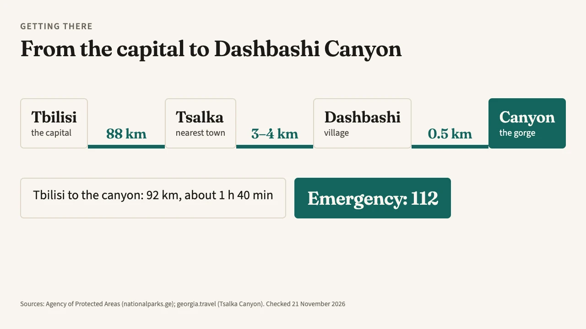
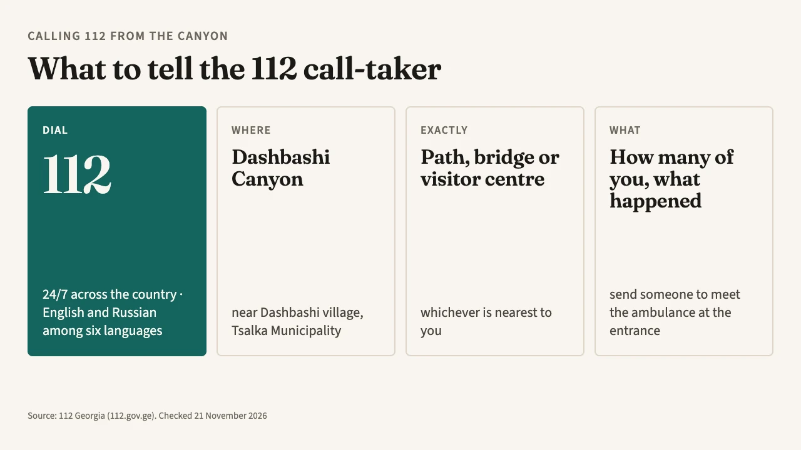

- Bridge length
- 240 m
- Canyon length
- 8 km
- Trail
- 1.8 km
- Tbilisi to the canyon
- 92 km
- Summer average
- +16°
- Emergency number
- 112
This page is part of the Georgia Travel Guide. Checked on 21 November 2026.
Where is Dashbashi Canyon, and why is it also called Tsalka Canyon?
The canyon lies in the Khrami River gorge, on a lava plateau near the village of Dashbashi. Both names are official: Georgia's National Tourism Administration (georgia.travel) and the Agency of Protected Areas use them together. The park gives the address as Dashbashi Village, Tsalka Municipality; the law places the canyon in the same municipality.

It is a natural monument; georgia.travel places it within Algeti National Park. The 2013 Law of Georgia on the Creation and Management of Natural Monuments (No. 1582-რს) lists it by name and gives its area as 538 hectares.
The height above sea level depends on the source: georgia.travel says 1,200–1,500 m, the Agency of Protected Areas 1,110–1,448 m.
Tbilisi to Dashbashi Canyon: the road, the way back and getting around
The Agency of Protected Areas gives 92 km and 1 h 40 min from Tbilisi to the area; the park's site says about 90 minutes. Go by road to the nearest big town, Tsalka, then to the village of Dashbashi and the canyon.

How far is the canyon from Tbilisi?
The Agency of Protected Areas gives 92 km and 1 h 40 min from Tbilisi. georgia.travel measures differently: 88 km to the nearest big town, 4 km to the village and 0.5 km from the village centre to the canyon. The Agency calls the last stretch to the village a 3 km gravel road, about 10 minutes by car; georgia.travel says 4 km.
By car, taxi or marshrutka
We found no official timetable, stop or fare for a minibus to the canyon, so plan your own transport. The park says guided transfers and private transport are available, with parking on site.
The Government of Canada's travel advice is blunt: minibuses called "marshrutka" are "poorly maintained and often lack security features like seatbelts", and it advises avoiding them. The UK government's travel advice adds that roads outside city centres are often badly lit and poor quality.
See Georgia roads: what to expect and What official advice says.
Our tip. Agree on the way back before you leave: a taxi that waits, or a driver for the whole day. Set off early enough to be back in daylight, and read Night driving, mountains and winter if you drive yourself.

More day trips from the capital: David Gareja and Uplistsikhe.
Diamond Bridge: the glass bridge over the canyon
The Diamond Bridge is a 240-metre bridge with a glass floor across the canyon. georgia.travel adds a bar and restaurant at its centre.

We give no height, opening year or cost: neither georgia.travel nor the park publishes them.
Is the Diamond Bridge in Tbilisi?
No. It spans the canyon, outside the capital. The Bridge of Peace in Tbilisi is a different structure: a pedestrian bridge between Erekle II Street and Rike Park, which georgia.travel says is covered in blue glass panels.
Fear of heights and the glass: who should think twice
The park publishes no age, weight or health rules for the bridge. "Not listed" does not mean "no limits", so ask at the desk before you buy.
The only rule we found is for the waterfall trail: visitors taller than 1.2 m and no pets. The park recommends hiking or sports shoes, says the way to the trail includes stairs, and warns that the trail may close when conditions are bad.
What follows is our advice, not official guidance.
Our tip.
- If you are afraid of heights, do not stop in the middle of the bridge and do not look down from the edge.
- Go with a companion who is not afraid of heights.
- Hold children by the hand and keep them away from the railing.
- If you feel dizzy or panicky, step off towards the shore, sit down and call the staff. For chest pain or if you get worse, call the emergency number.

Zipline, swing and other rides: what the park publishes
The park's site lists Sky Bikes on a steel cable and a Cliff Swing, both paid separately, as well as slides, go-karts and an inflatable park. Its open pages give no age, weight or health rules for them, so treat them as you treat the bridge.
Our tip. Before you pay for any ride, ask at the desk for the age, weight and medical limits. Photograph the answer or the rules board.
Hiking in Dashbashi Canyon: the trail down and the climb back
The path is 1.8 km long, starts at the visitor centre, enters the canyon valley near the waterfall and takes about an hour there and back; georgia.travel and the Agency of Protected Areas agree on this. The park recommends hiking or sports shoes.

The climb back up is the part to plan for. No source we read gives a separate time for it or the height difference along the path. The range of 1,110–1,448 m is for the whole canyon, not for the walk. The Agency of Protected Areas adds that specially designated vehicles can carry visitors along the path if they wish; we found no details on where they run or what they cost.
The Government of Canada's travel advice says: "Trails are not always marked and weather conditions can change rapidly."
Our tip. Walk down in shoes with a ridged sole, with water and a cap. Climb back with stops if it is hot or the path is wet, and be out before the park closes.
See Sprains, blisters and when to call 112 and Snakes, dogs and weather.
Waterfalls and the Crying Wall
The path passes the waterfalls along the canyon walls. georgia.travel calls the curtain of small cascades on the rock the Crying Wall. It is also written Weeping Wall. The sources give individual falls no official names or heights.
For another canyon, in western Georgia, see Martvili Canyon.
Dashbashi Canyon weather: heat, cold and ice
georgia.travel gives an average of +16 degrees in summer and says the main waterfall freezes when the temperature drops to −6. We found no official climate norms for the canyon, so check the forecast on the day you go.
Our tip. Pack a warm jacket and a cap in the same bag, and take more water than you think you need. A warm day does not mean a dry path.
Dashbashi Canyon in winter
Nothing we found says the canyon closes for the season, but the main cascade freezes, and the park says the path may close when conditions are bad.
Our tip. Ice on the stairs and wet stone are slippery. Do not go onto the ice. Without non-slip soles, do not go down the stairs; if in doubt, stay at the top and ask the staff.

The road matters too: snow and heavy rain at higher altitudes can make travel difficult or impossible, the UK government's travel advice says. See Night driving, mountains and winter.
Entrance fee and opening hours
We found no prices on the park's open pages. For a day visit, the park says no booking is needed. Hours and season can change, so check the site before you go.
Medical help near the canyon: the emergency number and the nearest hospital
In an emergency, dial 112 and ask for an ambulance, the UK government's travel advice says; it also warns that outside the capital medical facilities are limited. The Government of Canada adds that rural areas have shortages of medical supplies and personnel, and that first responders may not be able to reach them.
Calling 112 from the canyon
It is the single emergency number: calls are taken 24/7 across the whole country, in Georgian, English, Azerbaijani, Armenian, Turkish and Russian. The emergency service says your phone must be within a mobile operator's coverage area; we have no data on coverage inside the canyon, so do not count on a signal.
Our tip. Say where you are first: "Dashbashi Canyon, near Dashbashi village, Tsalka Municipality". Then say whether you are on the path, at the bridge or at the visitor centre, how many of you there are and what happened. Send someone to meet the ambulance at the entrance. If your phone shows no network, move to where it does or ask someone at the visitor centre to call. More in What to tell the operator.

Where is the nearest hospital?
We found no official list of hospitals or first-aid posts for Tsalka Municipality, so we name none and give no distance. Clinics are listed for the capital, so for anything that is not an emergency expect a drive: the catalogue of doctors and clinics in Tbilisi had 574 clinics on 21 November 2026.
Since 1 January 2026, health and accident insurance of at least 30,000 GEL has been required for tourists entering Georgia, under Resolution No. 602 of the Government of Georgia of 26 December 2025. What the rule asks of you is explained in Insurance to enter Georgia. The UK government also advises insurance that covers local treatment and unexpected medical evacuation.
In April 2026 the State Laboratory of Agriculture confirmed rabies in a fox in Tsalka Municipality, the National Food Agency said, as reported by the public broadcaster 1TV; a quarantine was declared at the time. After a bite or scratch, see Rabies in Georgia.
Frequently asked questions
How do I get to Dashbashi Canyon from Tbilisi?
Is there a glass bridge in Georgia?
Is the glass bridge worth visiting?
How much does it cost to enter?
We found no prices on the park's open pages; check its site.
Can you go to the canyon in winter?
Sources
- Georgian National Tourism Administration: Tsalka (Dashbashi) Canyon ↑
- Park operator (kassland.com): attractions ↑
- Park operator (kassland.com): plan your visit ↑
- 112 Georgia: languages and service ↑
- Agency of Protected Areas: Algeti National Park (Tsalka Canyon) ↑
- Legislative Herald of Georgia: Law on the Creation and Management of Natural Monuments No. 1582-რს (Georgian) ↑
- Government of Canada: travel advice for Georgia (last updated 27 August 2026) ↑
- GOV.UK travel advice: safety and security ↑
- Georgian National Tourism Administration: Bridge of Peace ↑
- GOV.UK travel advice: health ↑
- Legislative Herald of Georgia: Resolution No. 602 (Georgian) ↑
- 1TV (public broadcaster): rabies confirmed in Tsalka, quarantine imposed (8 April 2026) ↑
This guide is general information, not medical advice: the doctor decides on your care.